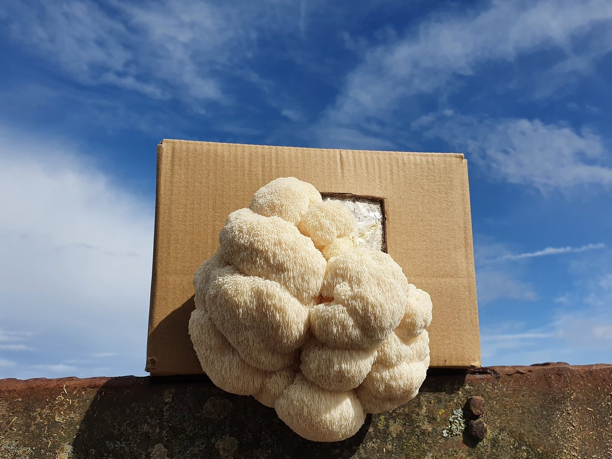

NaI KoDaI
LION'S MANE MUSHROOMWhen it comes to standout fungi, the Lion's Mane mushroom (Hericium erinaceus) commands attention with its unique appearance and impressive benefits. Renowned for its remarkable texture and potential health advantages, Lion's Mane is becoming a prized ingredient in kitchens worldwide. Whether you're a gourmet chef or a curious home cook, this mushroom deserves a place in your culinary repertoire. What Makes Lion's Mane Mushrooms Special?Lion's Mane mushrooms are easily recognizable by their distinctive, shaggy appearance. Their white, cascading spines resemble the mane of a lion, giving them both a striking and memorable look. This unique structure is not just for show; it contributes to their meaty texture and makes them a standout ingredient in various dishes. The flavor profile of Lion's Mane mushrooms is another key feature. They offer a mild, slightly sweet taste with subtle notes of seafood, often compared to crab or lobster. This delicate flavor enhances dishes without overpowering other ingredients, making Lion's Mane a versatile addition to many recipes. Culinary Uses and RecipesLion's Mane mushrooms are incredibly versatile in the kitchen. Their texture, which can be likened to that of meat, makes them a great substitute for seafood or meat in vegetarian and vegan dishes. You can pan-sear them to achieve a golden, crispy exterior, or use them in soups and stews where their flavor melds beautifully with other ingredients. Nutritional BenefitsBeyond their culinary appeal, Lion's Mane mushrooms offer notable health benefits. They are rich in antioxidants and contain compounds that may support cognitive function and nerve health. Additionally, they provide essential nutrients such as B vitamins, potassium, and dietary fiber. Incorporating Lion's Mane mushrooms into your diet can contribute to overall well-being and health. |
 |
FOLLOW US ON THE WEB